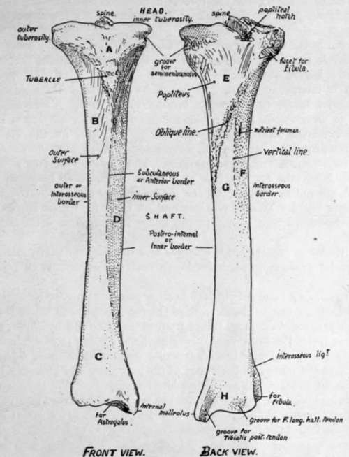

Tibia And Fibula
Description
This section is from the book "The Anatomy Of The Human Skeleton", by J. Ernest Frazer. Also available from Amazon: The anatomy of the human skeleton.
Tibia And Fibula
Long bones firmly fastened together and forming, with the interosseous membrane stretched between them, the skeleton of the leg and surfaces of attachment for its muscles. The tibia is the inner and larger bone and articulates with the femur above.
but both bones articulate with the astragalus to form the ankle, although the tibia alone carries the weight directly to the upper surface of the astragalus.
Tibia
The upper end, or head, is expanded to carry the condyles of the femur, and presents on its upper surface corresponding inner and outer articular surfaces : these are separated by an intervening non-articular area, in the «niddle of which is a prominent spine, really consisting of two tubercles placed side by side : the non-articular surface in front of the spine is wide and triangular, but is narrowed behind and falls away in a popliteal notch.
Fig. 128.-Right tibia. Anterior and posterior surfaces. A. area supporting fatty pad and bursa under cover of patellar tendon and capsule ; B. surface covered by Tibialis anticus ; C. lower part of outer surface looking more forward and supporting all the extensor tendons, etc. ; D. surface covered only by superficial fascia and skin ; E. covered by Popliteus ; F. for Tibialis posticus ; G. area covered by Flexor long. dig. ; H. area in relation with all the structures going behind inner ankle.
The two masses of bone which support the inner and outer articular surface are termed the inner and outer tuberosities respectively : the inner tuberosity has a groove on its inner and back aspect for the insertion of Semimembranosus, and the outer has the upper fibular facet, for the head of that bone, on its lower, outer, and back aspect.
On the front of the bone, between the two tuberosities and at a lower level, is the prominent tubercle for the attachment of the ligamentum patellae : this process is included in the epiphysis of the upper end.
The shaft is broadened above and below, but is mainly three-sided : it has a prominent anterior border (subcutaneous border), an inner or postero-internal border, and an outer or interosseous border : the subcutaneous inner surface is between the front and inner margins, the slightly hollowed outer surface for the Tibialis anticus lies between the anterior crest and the interosseous border, and the posterior surface between the interosseous and inner margins. The posterior surface is wide above, where the triangular area for insertion of Popliteus is bounded below by the oblique line running down and in : below this the shaft is partly divided by the faint vertical line into an outer area for Tibialis posticus and an inner for Flexor longus digitorum : a large nutrient foramen, the largest in the body, is situated a little distance below the oblique line.
Towards its lower end the shaft enlarges and the anterior sharp margin becomes less defined and turns somewhat inwards, so that the outer surface comes to look a little forwards.
The lower end, as a result of this thickening, presents an anterior surface Covered by the tendons, etc., going to the dorsum of the foot, internal to which the ill-defined front margin is prolonged down on to the front of the (internal) malleolus, a projection downwards that forms the inner prominence of the ankle and rests against the side of the astragalus : it consequently has an articular surface on its outer side. The inner margin runs on to the inner and back part of the malleolus, and bounds a well-marked groove for Tibialis posticus tendon. The posterior surface of the lower end presents, in addition to this groove, a second broader but very badly marked groove further out for tendon of F. longus hallucis. The outer surface presents a small lower fibular facet or impression with a rough ligamentous area above it. The lower surface is articular for the astragalus, concave from before backwards, and slightly convex from side to side.
Continue to:
- prev: Patella
- Table of Contents
- next: Fibula